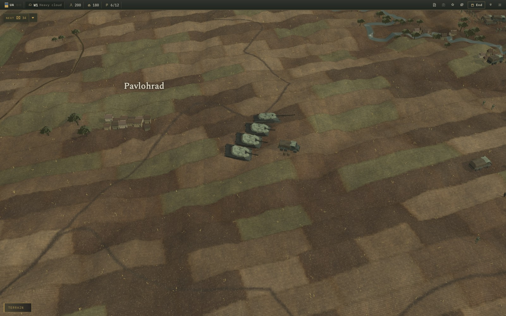
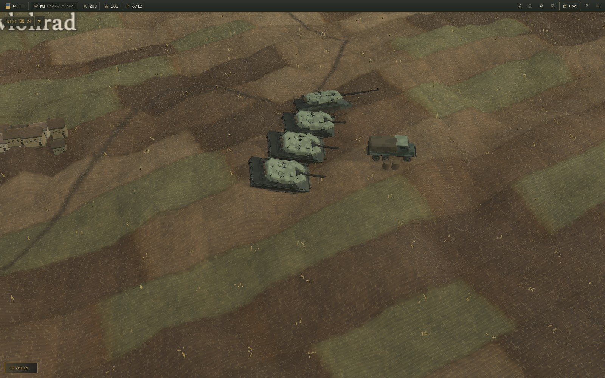
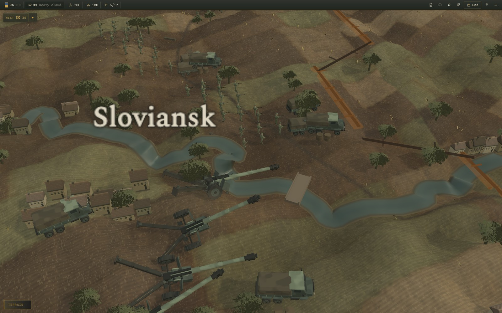
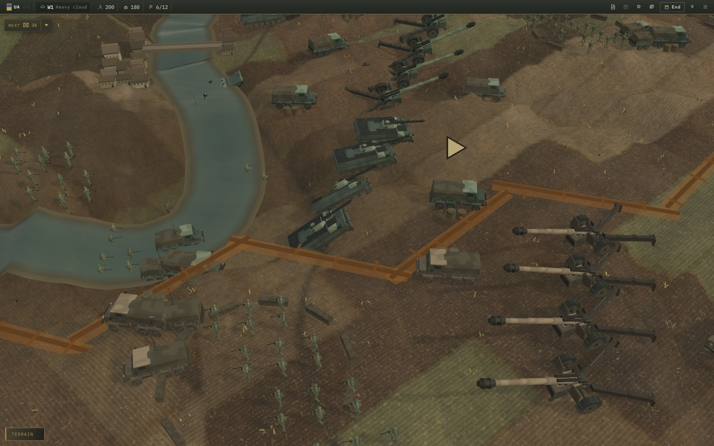
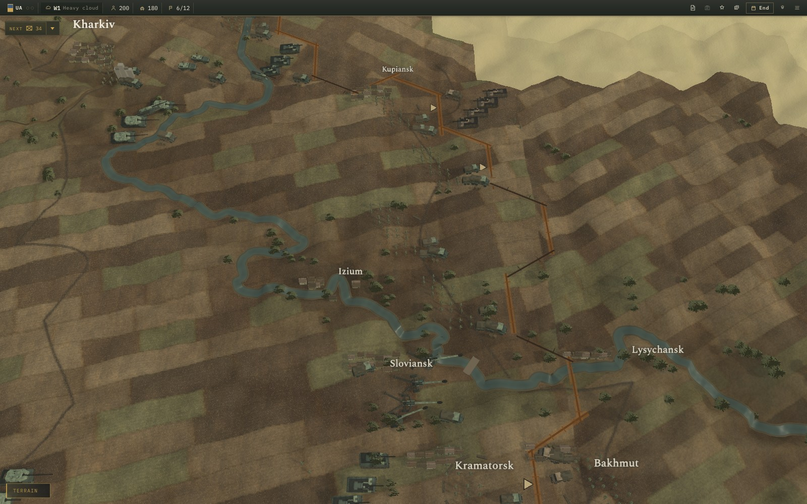
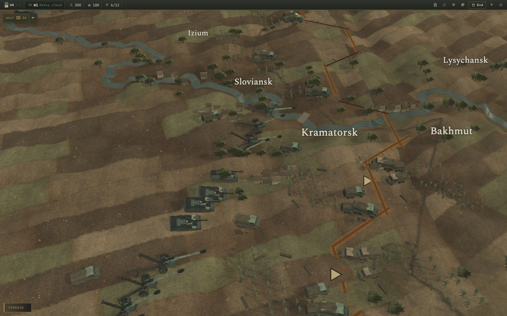

Black Theatre · 22 September 2026 · Running-game captures
Shaped steel. Worked earth.
A second pass on the actual models and map: sloped armour, material-specific reflections, fitted uniforms and equipment, detailed logistics vehicles, leaf silhouettes, shorter field parcels, and ground contact for individual elements.
Same camera, before and after
The left side is the previous review frame; the right side is the updated game. The numbered markers on the earlier image belong to that review.


BEFOREAFTER
Closer inspection
The playable minimum camera distance is now 4.2. These views use the same models and materials as the operational map.

Armour — clipped turret corners, compound cheek plates, chamfered edges, painted steel, dusty running gear and ground-following placement.

Infantry — three static poses, rounded anatomy, webbing, packs, hands and separate rifle components.

Mechanized — shaped turrets and shared PBR paint; trucks have three axles, glazing, grilles, mirrors and seamed canvas.
The operational map

Shorter parcels, olive pasture and dry stubble, soil relief, survey-aligned drill rows and tractor runs. Camera-fitted shadows retain small model details.

Porous leaf crowns replace solid tree lumps. Roof courses, gutters and masonry foundations add settlement detail. Water has animated ripple normals and a distinct response from the matte banks.
Implementation, checks and reproduction instructions